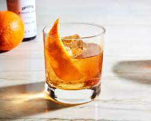

Old Fashioned

The old-fashioned is a simple way to dress up whiskey. Made with bitters, sugar, and
an orange slice, it's an excellent way to experiment with any style of whiskey. Plus,
this recipe has served as inspiration for a myriad of modern old-fashioneds, which are
equally fascinationg.
Ingredients
- 1/2 teaspoon sugar
- 3 dashes Angostura bitters
- 1 teaspoon water
- 2 ounces bourbon
- Garnish: orange peel
Steps
- Add the sugar and bitters to a rocks glass, then add the water, and stir
until the sugar is nearly dissolved.
- Fill the glass with large ice cubes, add the bourbon, and gently sitr to
combine.
- Express the oil of an orange peel over the glass, then drop in.